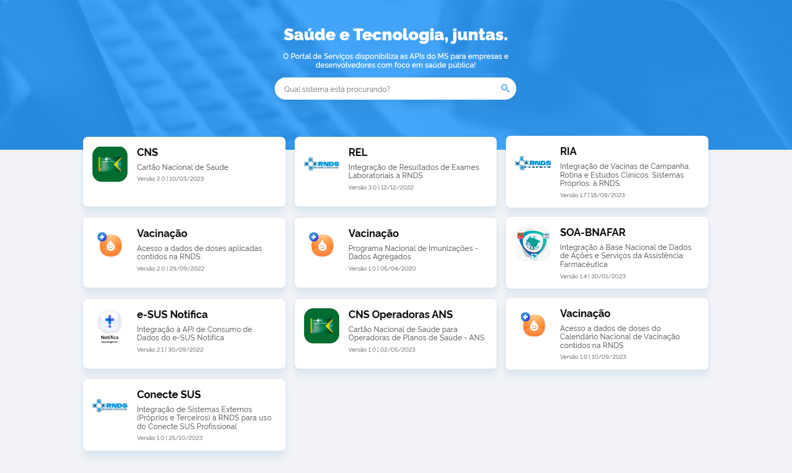
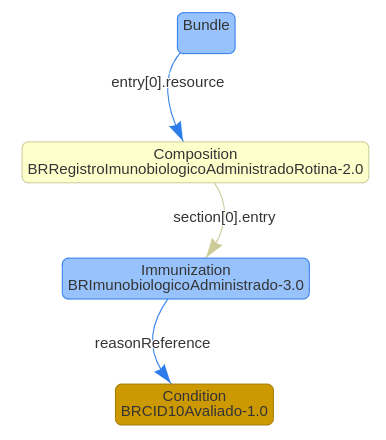

http://www.saude.gov.br/fhir/r4/CodeSystem/BRCBO
http://www.saude.gov.br/fhir/r4/CodeSystem/BRCID10
http://www.saude.gov.br/fhir/r4/CodeSystem/BRCategoriaDiagnostico
http://www.saude.gov.br/fhir/r4/CodeSystem/BRCondicaoMaternal
http://www.saude.gov.br/fhir/r4/CodeSystem/BREstrategiaVacinacao
http://www.saude.gov.br/fhir/r4/CodeSystem/BRGrupoAtendimento
http://www.saude.gov.br/fhir/r4/CodeSystem/BRImunobiologico
http://www.saude.gov.br/fhir/r4/CodeSystem/BRLocalAplicacao
http://www.saude.gov.br/fhir/r4/CodeSystem/BRRegistroOrigem
http://www.saude.gov.br/fhir/r4/CodeSystem/BRTipoDocumento
http://www.saude.gov.br/fhir/r4/CodeSystem/BRViaAdministracao
urn:iso:std:iso:3166
This fragment is not visible to the reader
Este publication inclui o IP abrangido pelas seguintes declarações.
| Type | Reference | Content | ||||||||||||||||||||||||||||||||||||||||||||||||||||||||
|---|---|---|---|---|---|---|---|---|---|---|---|---|---|---|---|---|---|---|---|---|---|---|---|---|---|---|---|---|---|---|---|---|---|---|---|---|---|---|---|---|---|---|---|---|---|---|---|---|---|---|---|---|---|---|---|---|---|---|
| web | www.saude.gov.br |
IG © 2026+ Ministério da Saúde do Brasil
.
Package br.gov.saude.ria.fhir#1.0.0-release based on FHIR 4.0.1
.
Generated
2026-06-15
Links: Table of Contents | QA Report |
||||||||||||||||||||||||||||||||||||||||||||||||||||||||
| web | wiki.ihe.net | This is a metadata field from XDS/MHD . | ||||||||||||||||||||||||||||||||||||||||||||||||||||||||
| web | servicos-datasus.saude.gov.br | A integração com a RNDS dar-se-á por meio dos serviços ( web services ) mencionados anteriormente. Para que seja possível acessar esses serviços disponibilizados no EHR Services é necessário realizar solicitação de acesso no Portal de Serviços do DATASUS . | ||||||||||||||||||||||||||||||||||||||||||||||||||||||||
| web | webatendimento.saude.gov.br | Vale contextualizar que o parceiro tecnológico pode acionar a equipe técnica do DATASUS por meio do link de suporte se houver dúvidas nos testes ou algum problema no processo de integração. | ||||||||||||||||||||||||||||||||||||||||||||||||||||||||
| web | acesso.gov.br | O acesso aos serviços digitais oferecidos pelo governo deve ser autenticado inicialmente pela plataforma gov.br, a qual exige uma conta que qualquer cidadão pode criar pelo portal https://acesso.gov.br . | ||||||||||||||||||||||||||||||||||||||||||||||||||||||||
| web | www.gov.br | Este Guia de Implementação (IG) tem o objetivo de orientar Estados, Municípios, Distrito Federal, Estabelecimentos de Saúde ou Empresas Privadas que fornecem soluções/software na área de saúde a utilizarem os serviços (web services) que foram desenvolvidos para a Rede Nacional de Dados em Saúde (RNDS) , fornecendo as orientações técnicas necessárias para a integração dos sistemas/soluções locais com a rede, para o envio do Registro de Imunobiológico Administrado (RIA) seguindo as especificações do padrão HL7 FHIR versão R4 . | ||||||||||||||||||||||||||||||||||||||||||||||||||||||||
| web | servicos-datasus.saude.gov.br | Este Guia de Implementação (IG) tem o objetivo de orientar Estados, Municípios, Distrito Federal, Estabelecimentos de Saúde ou Empresas Privadas que fornecem soluções/software na área de saúde a utilizarem os serviços (web services) que foram desenvolvidos para a Rede Nacional de Dados em Saúde (RNDS) , fornecendo as orientações técnicas necessárias para a integração dos sistemas/soluções locais com a rede, para o envio do Registro de Imunobiológico Administrado (RIA) seguindo as especificações do padrão HL7 FHIR versão R4 . | ||||||||||||||||||||||||||||||||||||||||||||||||||||||||
| web | www.gov.br | A RNDS é uma plataforma nacional de integração de dados em saúde que faz parte do Meu SUS Digital , um programa do Governo Federal que tem como principal missão materializar a Estratégia de Saúde Digital do Brasil . | ||||||||||||||||||||||||||||||||||||||||||||||||||||||||
| web | bvsms.saude.gov.br | A RNDS é uma plataforma nacional de integração de dados em saúde que faz parte do Meu SUS Digital , um programa do Governo Federal que tem como principal missão materializar a Estratégia de Saúde Digital do Brasil . | ||||||||||||||||||||||||||||||||||||||||||||||||||||||||
| web | pt.wikipedia.org | Para garantir a interoperabilidade entre as aplicações de Saúde Digital, em especial Prontuário(s) Eletrônico(s) do Paciente, portais e aplicações ( web e mobile ), a troca de informações ocorre por meio de serviços ( web services ) RESTful , desenvolvidos de acordo com o padrão FHIR R4 . | ||||||||||||||||||||||||||||||||||||||||||||||||||||||||
| web | mobileapps.saude.gov.br | Seu navegador não suporta visualização de PDF. Clique aqui para abrir . | ||||||||||||||||||||||||||||||||||||||||||||||||||||||||
| web | servicos-datasus.saude.gov.br | Na página da RNDS no Portal de Serviços do DATASUS há um projeto de exemplo para obtenção do token utilizando a linguagem Java . | ||||||||||||||||||||||||||||||||||||||||||||||||||||||||
| web | www.java.com | Na página da RNDS no Portal de Serviços do DATASUS há um projeto de exemplo para obtenção do token utilizando a linguagem Java . | ||||||||||||||||||||||||||||||||||||||||||||||||||||||||
| web | servicos-datasus.saude.gov.br | Com essas evidências, o solicitante pode solicitar acesso ao ambiente de produção no Portal de Serviços . | ||||||||||||||||||||||||||||||||||||||||||||||||||||||||
| web | mobileapps.saude.gov.br |
Contents: Integração com a RNDSPara garantir a interoperabilidade entre as aplicações de Saúde Digital, em especial Prontuário(s) Eletrônico(s) do Paciente (PEP), portais e aplicações ( web e mobile ), a troca de informações ocorre por meio de serviços ( web services ) RESTful, desenvolvidos de acordo com o padrão FHIR R4 . Identificadores do Registro Enviado a RNDSVale ressaltar que os registros são documentos computacionais, em formato JSON, compostos por perfis ( profiles ) do padrão FHIR R4. Cada registro enviado à RNDS possui dois identificadores:
SegurançaSomente com uma solicitação de acesso aprovada será possível realizar o consumo dos serviços ( web services ) do EHR Services .
Após a aprovação, o primeiro passo para realizar o consumo dos serviços é realizar a
autenticação utilizando o serviço
Caso não ocorra nenhum destes problemas, a operação de autenticação será realizada com sucesso
e será retornado um token
(
A autenticação com certificado digital da RNDS utiliza a técnica chamada “ Two-way SSL ”. No “ Two-way SSL ”, além do certificado do servidor, o cliente também deve utilizar um certificado válido e que será conferido. Por outro lado, na autenticação SSL (ou “ One-way SSL ”) somente o certificado digital do servidor deve ser válido e será conferido. Vale ressaltar que o certificado digital deve ser usado somente para realizar a autenticação e obter o token . A partir desse momento, o token é seu " ticket " de passe e todas as chamadas devem ser usadas utilizando somente este, não gerando a degradação de performance relacionada ao uso do certificado digital. Por isso, recomenda-se reutilizar o " ticket " ao máximo durante seu tempo de vida e só então obter um novo token repetindo a operação de autenticação com “ Two-way SSL ”. Na página da RNDS no Portal de Serviços do DATASUS há um projeto de exemplo para obtenção do token utilizando a linguagem Java . Ambientes de IntegraçãoSeguindo as boas práticas serão disponibilizados dois ambientes para a integração: homologação e produção. Ambiente de HomologaçãoO ambiente de homologação tem como finalidade validar a integração, seus parâmetros de entradas, saídas e comportamentos negociais, permitindo a realização de testes antes da efetiva comunicação com o ambiente de produção. O ambiente de homologação é único, ou seja, todos os interessados em realizar o consumo dos serviços ( web services ) utilizarão o mesmo ambiente. Porém, mesmo usando o mesmo ambiente, as informações trafegadas (incluídas ou consultadas) estarão restritas aos estabelecimentos de saúde (CNES) elencados na etapa de credenciamento. Os endereços dos componentes de integração, no ambiente de homologação, são:
Evidências da HomologaçãoA partir dos testes realizados e da implementação local, serão aceitas como evidências dos testes em homologação um arquivo com:
Com essas evidências, o solicitante pode solicitar acesso ao ambiente de produção no Portal de Serviços . Ambiente de ProduçãoO ambiente de produção é o ambiente estável e real que provê os serviços ( web services ) a serem consumidos. Para o ambiente produtivo, os integradores deverão acessar os endereços dos seus estados (UF). Durante o credenciamento, a credencial de acesso (Certificado Digital) será associada a um estabelecimento de saúde (CNES) (ou conjunto de estabelecimentos de saúde) no Portal de Serviços do DATASUS. Com isso, a credencial de acesso pertencerá a um estado (UF) específico. Acessos a estados diferentes não são permitidos e serão bloqueados automaticamente pelos serviços ( web services ). Os endereços dos componentes de integração, no ambiente de produção, por estado, são:
Mensagens e Erros da RNDSAo enviar registros para as APIs da RNDS, a plataforma pode retornar diferentes respostas com alguns códigos. O documento abaixo tem como objetivo listar e descrever os erros (ERRXXX) e as mensagens (MSG) da RNDS, ajudando a identificar e corrigir inconsistências. Link para o documento da lista de errosSendo:
|
||||||||||||||||||||||||||||||||||||||||||||||||||||||||
| web | www.youtube.com | Live do RIA (05/12/2025) | ||||||||||||||||||||||||||||||||||||||||||||||||||||||||
| web | www.youtube.com | Live do RIA (06/02/2026) | ||||||||||||||||||||||||||||||||||||||||||||||||||||||||
| web | www.gov.br | Perfis dos tipos ValueSet e CodeSystem estão associados a recursos terminológicos. No contexto de imunizações e os domínios utilizados, foram criados CodeSystems específicos definidos pelo Comitê Gestor de Saúde Digital (CGSD) . | ||||||||||||||||||||||||||||||||||||||||||||||||||||||||
| web | www.gov.br | O documento clínico RIA-R (Registro de Imunobiológico Administrado em Rotina), destina-se ao registro das doses das vacinas previstas no Calendário Nacional de Imunização em atividades de vacinação rotineiras, bem como das doses aplicadas durante os estudos clínicos que subsidiaram a autorização de uso emergencial ou aprovação de registro sanitário de vacinas Covid-19 e de outras vacinas pela Agência Nacional de Vigilância Sanitária (ANVISA) . | ||||||||||||||||||||||||||||||||||||||||||||||||||||||||
| web | www.in.gov.br | PORTARIA CONJUNTA SAES/SVSA/SEIDIGI Nº 25, DE 27 DE NOVEMBRO DE 2023 | ||||||||||||||||||||||||||||||||||||||||||||||||||||||||
| web | webatendimento.saude.gov.br | Os chamados de suporte relacionados a RNDS deverão ser abertos no link: https://webatendimento.saude.gov.br/faq/rnds |
|
../assets/images/bra.svg
|
|
acessoGov.png |
|
estabelecimentosFilhos.png
|
|
gerenciadorCredenciais.png
|
|
portalServicos.png  |
|
riarMC.png  |
|
tree-filter.png
|